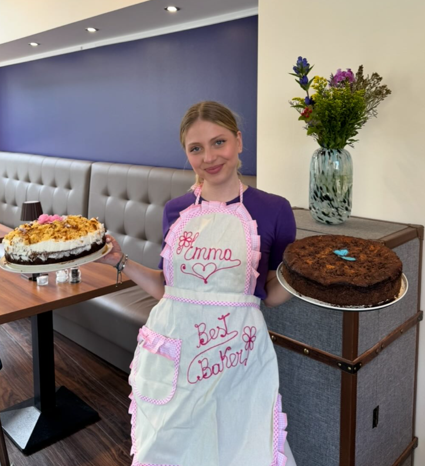

Der Duft von frisch geröstetem Kaffee, ein Augenblick der Stille und die leise Gewissheit, dass dieser Moment genügt. Mitten im Kiez, bei Niki's Soul Café.
Frühstück, Bowls und die wechselnde Tagesküche – mit Hingabe angerichtet und zum Dableiben gedacht. Ein paar Teller aus einer ganz gewöhnlichen, wunderbaren Woche bei Niki's Soul Café.
Jede Tasse beginnt mit einer Entscheidung: nur das auf die Karte zu nehmen, wovon wir wirklich überzeugt sind. Hausgemacht, wo immer es geht, und mit Dankbarkeit zubereitet.
Espresso, Cappuccino, Flat White und Filterkaffee aus frisch gerösteten Bohnen. Hafer-, Soja- oder Kuhmilch. Wer es ohne Koffein mag, bekommt einen richtig guten Entkoffeinierten – kein Kompromiss, sondern eine eigene Wahl auf der Karte.
Von der einfachen Stulle bis zur vollen Frühstücksplatte mit Rührei, Avocado, Obst und warmem Brot. Am Wochenende gibt es Brunch bis 15 Uhr – für größere Runden empfehlen wir eine Reservierung.
Croissants und Zimtschnecken aus eigener Backstube, dazu wechselnde Kuchen – Karotte, Käse-Sahne, Schoko und saisonales Obst.
Hausgemachte Limonaden, Eiskaffee und frisch gepresste Säfte. Im Sommer Eistee und Matcha über Eis.
Wochentags von 12 bis 15 Uhr: eine wechselnde warme Tagesempfehlung, Quiche, Suppen und belegte Focaccia. Immer mit einer vegetarischen und einer veganen Option. Zum Mitnehmen im Mehrwegbehälter oder in Ruhe bei uns – ein Blick auf die Tafel am Eingang verrät, was heute in der Küche steht.
Jede Torte, die unseren Tresen verlässt, trägt ein Stück Dankbarkeit in sich. Emma backt sie von Hand, aus Zutaten, die sie mit Sorgfalt auswählt – Karotte, Käse-Sahne, Schoko und was die Saison gerade schenkt. Kein Blech verlässt die Küche, ohne dass sie überzeugt ist: Dieses Stück macht jemandem den Tag ein bisschen schöner.

Am schönsten lässt sich ein Café über die Menschen beschreiben, die immer wiederkommen. Ein paar dankbare Worte aus unserem Gästebuch und von Google, mit freundlicher Erlaubnis geteilt.
„Der beste Cappuccino in Laufweite – und die Zimtschnecken sind gefährlich gut. Ich komme fast jeden Morgen vor der Arbeit vorbei.“
Lena K. — Stammgast
„Wir sind mit zwei kleinen Kindern reingekommen und wurden so herzlich empfangen, dass wir geblieben sind, bis der Kuchen alle war.“
Familie M. — Sonntagsbrunch
„Ich arbeite hier regelmäßig mit dem Laptop. Guter Kaffee, schnelles WLAN, und niemand schaut komisch, wenn man etwas länger bleibt.“
Sven B. — Freelancer aus dem Kiez
Ja – besonders für den Wochenendbrunch empfehlen wir das. Ruf uns einfach an oder schreib eine kurze Mail mit Datum, Uhrzeit und Personenzahl.
Immer. Pflanzenmilch gibt es ohne Aufpreis, und im Kuchentresen steht täglich mindestens ein veganes und ein glutenfreies Stück. Beim Mittagstisch ist stets eine vegane Option dabei.
Gern, unter der Woche vormittags und nachmittags. Beim Wochenendbrunch bitten wir darum, die Tische fürs Essen frei zu halten.
Ja, angeleinte Hunde dürfen mit rein. Einen Napf mit Wasser stellen wir hin.
Torten und Bleche für Geburtstage oder kleine Feiern gern mit ein paar Tagen Vorlauf. Für Catering im Büro sprich uns direkt an, dann stellen wir etwas Passendes zusammen.
Am besten lernt man uns bei einer Tasse Kaffee kennen. Für Reservierungen, Catering-Anfragen oder einfach ein dankbares Hallo – wir freuen uns, von dir zu hören.
Reservierung empfohlen für den Wochenendbrunch